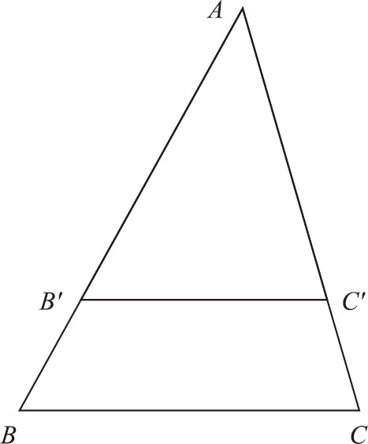
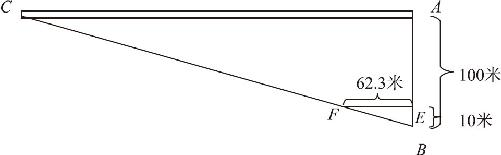
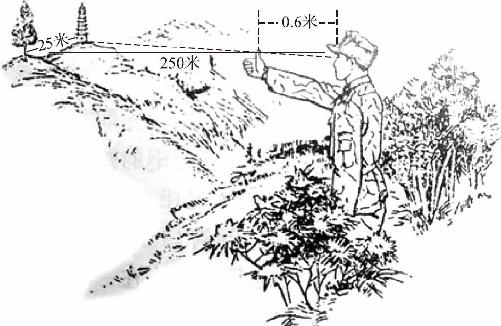

任何一个几何图形在经过了平移、旋转和翻转以后，图形的位置角度都会发生变化，但是最终得到的仍会是和原来的图形全等的图形．除了这些变换之外，日常生活中常见的还有另一类变换——图形的缩放．
平时在手机上看照片的时候是不是经常要放大缩小呢？开车看导航的时候是不是也得进行缩放呢？更重要的是，当我们决定动手做个东西的时候，往往也需要先在纸上做出一个小样来，试验成功了以后，才能用实际材料把它放大了做出来．所有这些都是在利用图形缩放的相关知识．图形缩放是我们最常用的几何知识，当我们把一个图形放大或者缩小了以后，它的大小就发生了改变，但它的形状却仍然保持不变．在几何学上，我们把大小不同、形状相同的两个图形叫作相似图形．
相似图形最基本的性质是，两个图形所有的对应角的大小相等，所有的对应边的长度成比例．最典型的例子就是：地图上的街道和实际的街道是相似的，因而每个地图都会有一个统一的比例尺．如果想要知道两地之间的实际距离，只需要拿着刻度尺测量一下地图上两点间的距离，然后乘以缩小的比例，最后得到的就是两地之间的真实距离．机械和建筑的设计图也是类似的道理，设计图上的所有尺寸和实际物体的真实尺寸之间总会保持一个稳定的比例．
是不是只要两个图形对应角相等，它们的对应边就一定成比例呢？不对！以长方形和正方形为例，它们的所有角度都是90°，应该说都是对应相等的，但是长方形长和宽的比例与正方形边长的比例，就不是对应成比例的．必须要研究一下，如何判断两个图形是否相似．
把两个相似的三角形叠放到一起，看看会出现什么现象．如图9－1所示：我们把大三角形ABC 和小三角形AB′C′ 放到了一起，其中∠A 是重合的，由于边长不相等，所以底边BC 和B′C′ 肯定是不重合的．

图9－1
因为这两个三角形是相似的，所以它们的三个角都是对应相等的，即∠A ＝∠A ，∠B ＝∠B′ ，∠C ＝∠C′ ．由于∠B 和∠B′ 是同位角的关系，所以我们不难发现，两个三角形的底边BC 和B′C′ 是平行的关系．而且由于两个三角形相似，我们还可以知道，它们的对应边是成比例的，也就是AB ∶AB′ ＝AC ∶AC′ ＝BC ∶BC′ ．
也就是说，经过中间的一组平行线分割，得到的左右两边的线段对应成比例．切出的三角形也是相似三角形．这就是相似图形的一个最重要的定理，线段被平行线所截以后，对应边成比例．不过上述过程并不是一个严格的证明．这个相似图形里头的学问，大部分还不在于定理证明，而在于它在实际生活中的运用．除了地图和设计图之外，在实际生活中，更多的是利用相似定理做测量．例如：
面前有几百米长的一条笔直的道路，但是手里只有100米的皮尺，现在我们要测量整个道路的长度，可以采用分段测量然后求和的方法．但是如果不想那么麻烦，还有更简单的办法：从道路的一头垂直地拉着皮尺走出100米，然后站在这儿不动，看一下，道路的另一端在哪个方向？瞄准了那个方向以后，在土地上画上一条直线，这样，就在道路的两个端点及你站的位置之间形成了一个直角三角形．然后，我们只需要再作出一个和它相似的小三角形来，测量一下这个小三角形对应边的尺寸，然后再按照比例放大就成了．
具体怎么作相似三角形呢？我们知道，两条平行线就能截出两个相似三角形来，可以在测量土地的皮尺这条直线上，作一条和道路平行的直线．具体作法如图9－2所示：假设我们要测量的道路为AC ，现在我们引出来的100米的皮尺为AB ，现在我们找到AB 上距离B 点10米远的一点E ，过E 点作一条AB 的垂线EF 交BC 于点F ，由于EF 和AC 都是垂直于AB 的，所以EF ∥AC ，因此△BEF 和△BAC 就是相似的关系，对应边成比例．即EF ∶AC ＝BE ∶BA ，由于BE 和BA 都是已知的，所以我们只需要测量出EF 的距离，按比例放大就可以得知AC 的长度，假设EF 的距离是62.3米，那么：
AC ＝EF ×BA ÷BE
＝62.3×100÷10
＝623（米）

图9－2
目前，该方法仍然是工程测量中的标准方法，只不过在工程师进行实际测量时不需要皮尺，而是用更为先进的激光测距仪．但不管使用什么样的工具，只要物体的实际尺寸没法直接测量，就必须要用相似三角形的原理来推算．利用这个原理还有没有什么更简单的办法，让我们大致估算一下距离呢？在影视节目中，侦察兵偶尔会握紧拳头，伸出一个手指来做距离测绘（如图9－3所示）．他只要用自己的左眼和右眼分别观察一下被测物体，看一下自己拇指落在什么位置上，就能大致地知道目标的远近，这其中利用的也是相似定理．因为，拇指和左右两只眼睛形成了一个三角形；同时，当他用一只眼睛看的时候，这个拇指落在相应的一个位置上，又利用了光沿直线传播的道理，两只眼睛分别看过去，就等于作了两条光线，于是就在观察者和被测物体之间形成了两个相似三角形．所以，他就可以利用等比例的这种性质，通过自己两眼宽度和拇指对应位置的宽度推算出目标距离．

图9－3
由于对应边成比例的这种性质，相似图形在实际生活中的运用非常多．在实际运用的时候，需要注意三点：第一，必须借助三角形的帮助；第二，必须借助平行线的帮助；第三，必要时最好借助光线的帮助．